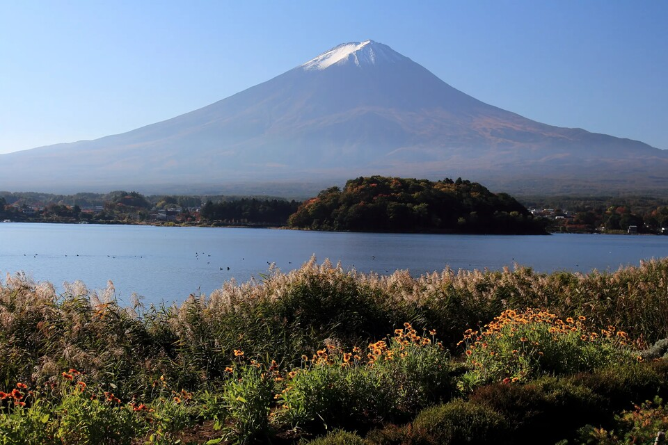
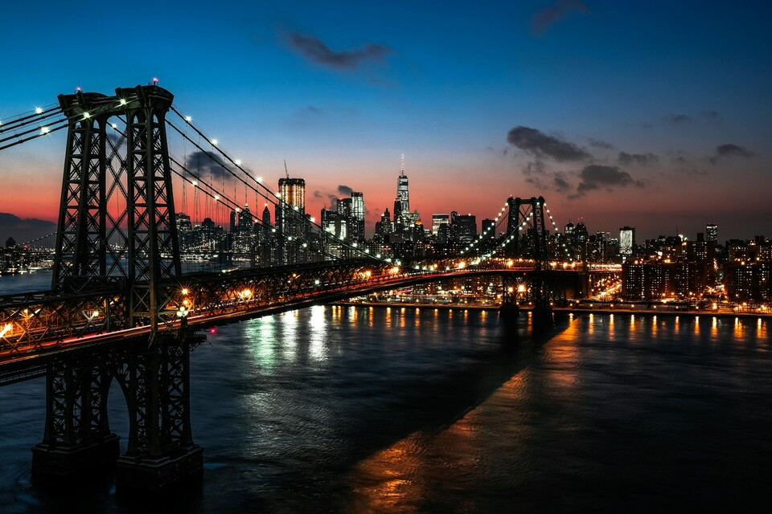
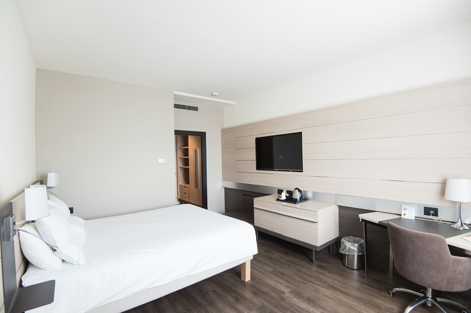
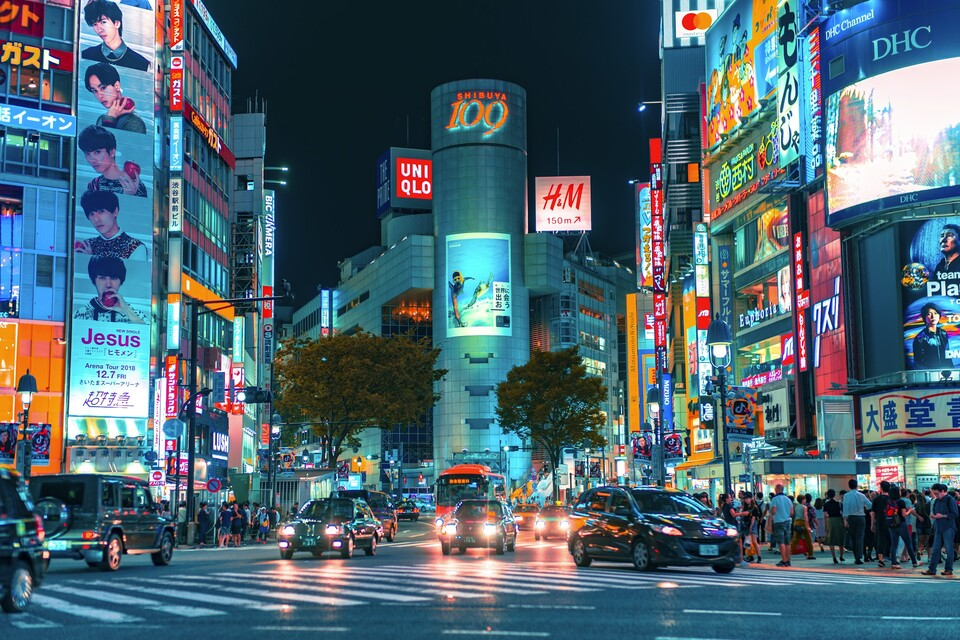
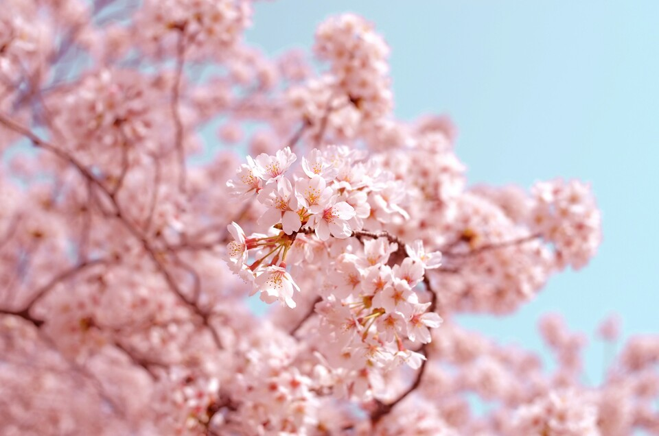

SIGNATURE JOURNEY · 6 DAYS
关东 · 山海相逢
从富士湖畔、箱根山水到伊豆海岸与镰仓街町，让山、海、温泉与城市在六天里自然衔接。
查看关东山海6日SEASONAL · INTIMATE · JAPAN
实景摄影 · 日本传统街町｜图片已存入网站本地目录
OUR WAY OF TRAVEL
飞鸟旅行相信，真正动人的旅程，来自正确季节里恰到好处的停留。
我们以日本四季为线索，用专业动线、地方美食、温泉旅宿与文化体验，组织每一段有节奏、有审美、也有温度的旅行。
ASUKA SELECTION
从正在打磨的完整行程，到值得收藏的季节方向；先从一幅风景，找到下一次出发。

从富士湖畔、箱根山水到伊豆海岸与镰仓街町，让山、海、温泉与城市在六天里自然衔接。
查看关东山海6日
在京都、大阪与奈良之间放慢脚步，让寺社、街町、庭园与地方滋味回到日常可感的尺度。
进入日本心旅行
循着山形、青森与仙台的冬日景色，把雪见温泉、山间聚落与东北风土编成一段从容慢旅。
进入日本心旅行
沿着濑户内海的光线串联香川、爱媛与海岛，在艺术、温泉和海风之间留出真正的停顿。
进入日本心旅行
从福冈向南，在火山地貌、温泉乡与地方料理之间，感受九州热烈而松弛的旅行节奏。
进入日本心旅行在札幌、函馆与道央雪原之间，收藏北国冬色、温泉暖意与安静辽阔的自然时刻。
进入日本心旅行第1项，共6项：关东山海相逢
THREE WAYS TO JAPAN
同一个日本，不止一种抵达方式。
精致团跟团产品。以季节、地方文化与极上宿为核心，重新设计跟团旅行的体验。
进入八大地区 →
从旅行日期、同行人到兴趣偏好，为你从零设计只属于这一次出发的日本。
开始填写需求 →从动漫、花火到观光列车与亲子慢游，以一个兴趣主题打开更深入的日本。
浏览主题灵感 →